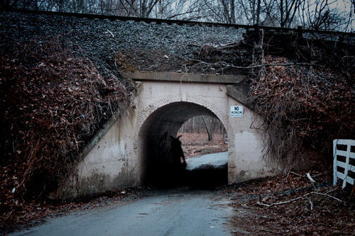

Ubicación: Fairfax County, Virginia, Estados Unidos.
Descripción del Avistamiento:
Descrito como un hombre con un traje de conejo blanco, el Bunnyman es conocido por su violencia y por portarse un hacha, el cual usa para atacar a quienes se acercan demasiado a su dominio. La leyenda del Bunnyman está asociada con el Bunnyman Bridge en Fairfax County, Virginia, un lugar que se ha convertido en un punto de encuentro para quienes buscan experimentar el terror en carne propia.
Los primeros avistamientos fueron reportados en 1970, y los testigos afirmaron ver una figura humanoide con orejas largas de conejo y ojos penetrantes que parecía desaparecer en la oscuridad. A menudo, se habla de los gritos de sus víctimas y de la presencia inexplicable de un ser que acecha en los alrededores del puente. El Bunnyman ha sido considerado una figura mitológica o un espíritu vengativo que no permite que los humanos se acerquen a su territorio.
Informe del Testigo:
"Era una noche oscura, y mi amigo y yo estábamos cerca del puente. De repente, lo vimos salir de las sombras, con un hacha en las manos. No pudimos movernos, estábamos paralizados de miedo. Nunca olvidaré esos ojos fríos y la figura gigante."
Hipótesis y Teorías:
Algunos creen que el Bunnyman es un psicópata que ha estado acechando la zona durante décadas, mientras que otros lo consideran una manifestación sobrenatural, una figura que se ha materializado a partir del miedo colectivo. Existen teorías que lo vinculan con prácticas de sacrificio o cultos antiguos, y algunos aseguran que sus apariciones predicen eventos violentos.Las apariciones del Bunnyman siguen siendo un misterio, y muchos sienten que aún acecha en la oscuridad de Fairfax.
Enlace a los Archivos X:
Las autoridades locales han intentado sin éxito esclarecer los sucesos en el Bunnyman Bridge, pero lo que muchos testigos no pueden negar es que una sombra aterradora se esconde en el lugar, esperando su próxima víctima.